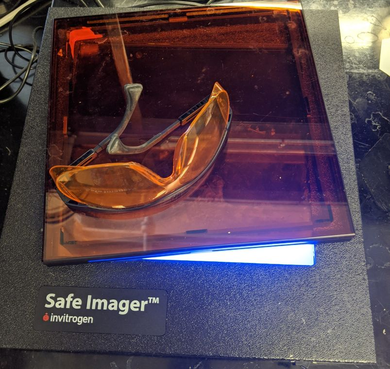
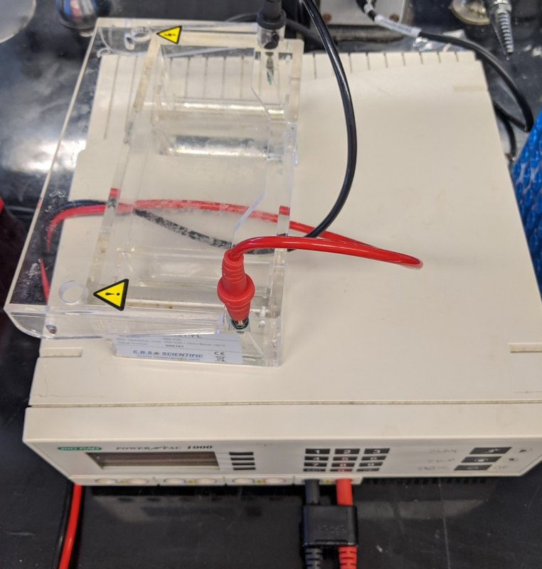

Section divider: Run a gel. The PCR is off the thermocycler, and the next question is whether it made anything.
SYBR Green / Safe
SYBR Green (maybe not a carcinogen?)….wear gloves
Ethidium Bromide (carcinogen)


Blue light imager (not UV)….but wear orange goggles
We use SYBR Safe dye which involves a blue lamp, not UV. This is a safety decision, but actually Ethidium Bromide and a UV lamp works better, though it causes cancer the dye and burns from the UV, so you have to be more careful with it. The big downside is that these ‘safe’ dyes, of which sybr green is one of a family of products, are not as sensitive, less linear relationship between intensity and signal, and have to be prepared fresh wherease ethidium bromide is highly stable at room temp.
Four things, in two rows. Along the top, the two dyes drawn as structures: SYBR Green on the left, an asymmetric cyanine, a benzothiazolium ring joined by a single carbon bridge to a quinoline that carries a phenyl on its nitrogen and a long amine chain off the ring, captioned as maybe not a carcinogen; and ethidium bromide on the right, a much smaller flat three-ring phenanthridinium with an ethyl on the nitrogen, a phenyl beside it, an amino group on each outer ring and a bromide counterion, captioned as a carcinogen. Wear gloves for either. Along the bottom, the hardware: an Invitrogen Safe Imager, a black box with an orange filter screen lit from below by blue light, with orange goggles lying on it, and beside it the gel rig itself, a clear acrylic tank leaded up to a Bio-Rad power supply.
Run the gel
Add 8 uL loading dye and 3 uL PCR product to a new PCR tube
Cut off a slab of pre-poured 1% TAE Agarose Gel
Load 9uL samples and an additional lane of BstEII ladder
Run the gel at 175 volts for around 10 min
Take a picture, describe in a Github issue, summarize the results
Loading dye contains:
Bromphenol Blue and Xylene Cylanol blue dyes
EDTA (to chelate any Mg ions and prevent reactions)
Glycerol (makes it dense)
SYBR Green (none in the gel or running buffer)
TAE contains:
Tris (buffer at neutral pH)
Acetate (counterion to TRIS)
EDTA (chelate Mg)
These cheatsheats with the protocol are in the lab
The gel protocol, five steps. Add 8 microlitres of loading dye and 3 microlitres of PCR product to a new PCR tube. Cut off a slab of pre-poured 1 percent TAE agarose gel. Load 9 microlitre samples plus one extra lane of BstEII ladder. Run at 175 volts for around 10 minutes. Then photograph it, describe it in a Github issue and summarize the results. The right half of the slide is empty for now; the two recipes that explain the procedure arrive there next.